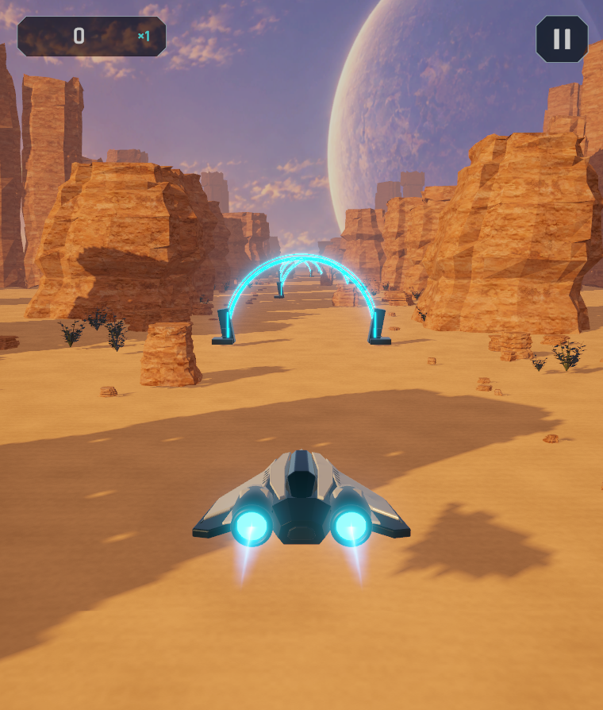

Referencia és javított webes játék
Balra az elfogadott kép bal oldali játékmezője, jobbra a tényleges új WebGL-exportból mentett kép. Azonos képarány, nincs retus vagy nyújtás. Játék indítása.
Elfogadott alapjelenetTényleges böngészős játék – javított változat
Javítva: hajó felépítése és képen belüli aránya, két fénylő hajtómű, rétegzett és repedezett sziklaformák, talajszín és apró törmelék, növényzet, oldalirányú meleg napfény, felhős bolygós ég, kapuk talapzata és fénye, fazettált kezelőfelület. A kamera oldalirányban és magasságban is követ.
Még látható eltérés: az eredeti terv sziklái és hajófelületei organikusabbak, finomabban kidolgozottak; a jelenlegi modelleken a szögletesség és ismétlődés még felismerhető. Ez a képpár a javulást mutatja, nem állít teljes vizuális egyezést vagy felhasználói elfogadást.
Valódi böngészős mozgásfelvétel
A WebGL-export futása közben rögzített néma videó, sérthetetlen próbával. Nem képkockánként renderelt szerkesztői bemutató és nem fizikai telefonos mérés.